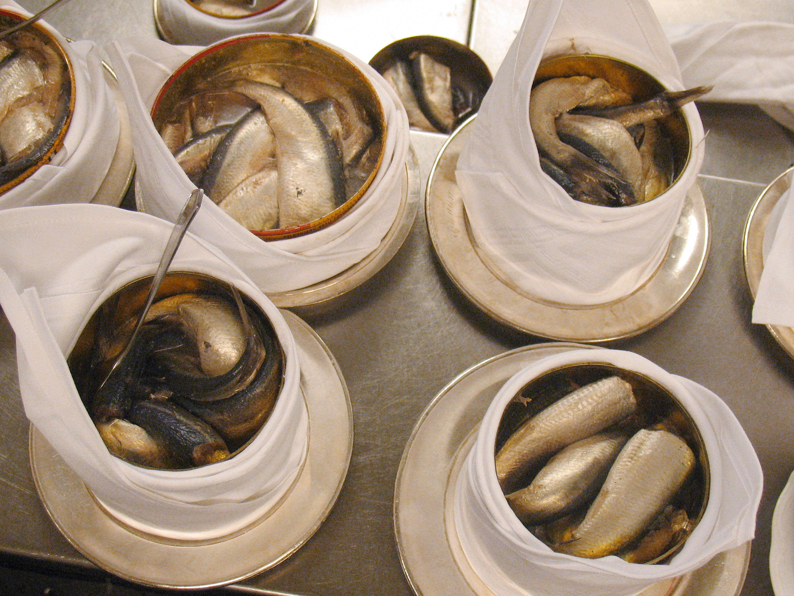

Surströmming

Description
Surströmming is a lightly salted, fermented Baltic Sea herring traditional
to Swedish cuisine since at least the 16th century. It is distinct from
fried or pickled herring.
Ingredients
Steps
-
Buy fresh herring during the traditional months of May and
June.You don't want the rotted fish to sit around too long, but you want to
be sure there is plenty of time for it to ferment during the traditional
surstromming feasting time of late August and early September.
-
Brine the herring for a day. Leave the salt
concentration a bit on the light side. It should measure about 23
degrees with your salinometer. After all, surstromming was created
specifically because the locals didn't have enough salt to preserve fish
in the normal way.
-
Decapitate and clean the herring.Fish heads and guts
aren't part of the classic recipe and would ruin the distinctive taste
of surstromming. Leave them out for the local cats, if you wish.
-
Put the decapitated, cleaned fish into a barrel, leaving an inch for
any gas to escape without causing an explosion.
Yes, surstromming has been known to explode or fizz out.
-
Leave it out in the sun for 24 hours to begin the fermentation
process.
This crucial step jump-starts the process and gets that rot underway.
Stir it every 3 hours to achieve an even putrefaction throughout the
mixture.
-
Reserve about 5 quarts of brine and pour off the rest.
Mix the reserved brine back in and add about 5 gallons of 12 degree
brine.
-
Move it indoors to a cool, dark place to let the fermentation
continue until mid-August.
Surstromming experts recommend that it be kept at a temperature of
63-65ºF(17-18ºC).
-
Finished.